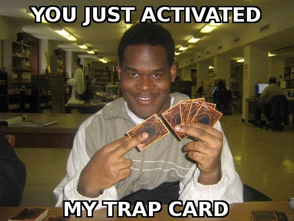

![[ANA JDG] Asterix and the Great Rescue - Megadrive](../vi/6oUXi0ckLmA/default.jpg)
![[ Présentation pour la chaîne Grenier des Joueurs ] JDG Prod](../art/SHAR.6419.583.2.jpg)


![[Fan-Art]boredguy8](../5252/79895252/pics/3244166810_1_3_ln6GXNIb.jpg)
J'ai juste repris une image du Slenderman et j'ai changer tout ce qui était rouge en bleu (et j'ai mis le bout de cravate manquant dans sa poche ventrale),j'ai inséré en fond le pseudo de boredguy8 qui est déjà utilisé par un de mes nombreux partenaires!

![[Fan-Art]boredguy8](../5252/79895252/pics/3244166810_1_7_gjk2P8ka.png)
![[Fan-Art]boredguy8](../5252/79895252/pics/3244166810_1_9_5dGcPdWw.jpg)


![[DJ-Glin]Mes 3 petits sons](../5252/79895252/pics/3234058007_0_2_FmQZJYFV.png)

![[Présentation de Programme]Format Factory](../5252/79895252/pics/3228677613_1_16_UlxLG5Fl.jpg)
![[Présentation de Programme]Format Factory](../5252/79895252/pics/3228677613_1_18_CGBT6Fdt.jpg)
![[Présentation de Programme]Format Factory](../5252/79895252/pics/3228677613_1_20_ZJAzrPjU.jpg)
![[Présentation de Programme]Format Factory](../5252/79895252/pics/3228677613_1_22_iWXr1Wnl.jpg)
![[Présentation de Programme]Format Factory](../5252/79895252/pics/3228677613_1_24_o330oP2a.jpg)
![[Présentation de Programme]Format Factory](../5252/79895252/pics/3228677613_1_26_EAKYHVFm.jpg)
![[Présentation de Programme]Format Factory](../5252/79895252/pics/3228677613_1_28_3JsQTrIi.jpg)


![[Creepy-Pasta]La théorie du coma de Sacha!](../5252/79895252/pics/3223761183_1_3_iVsj0CmP.png)
![[Creepy-Pasta]La théorie du coma de Sacha!](../5252/79895252/pics/3223761183_1_5_WSF4hcVm.png)
![[Creepy-Pasta]La théorie du coma de Sacha!](../5252/79895252/pics/3223761183_1_7_LN0qnavo.jpg)


Partage